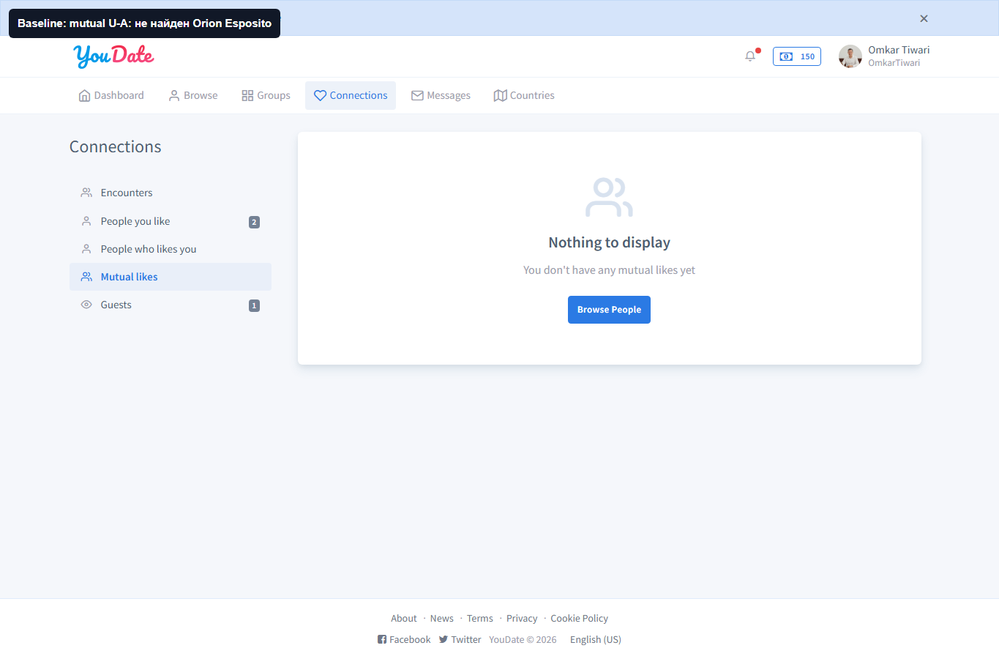
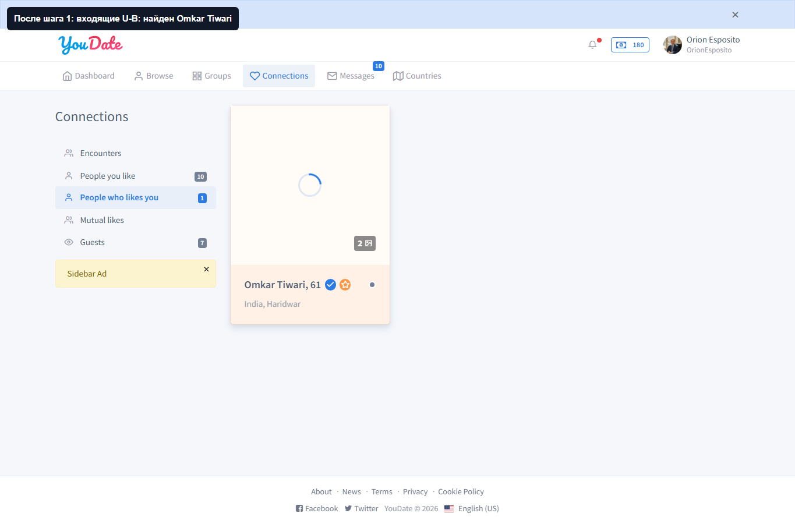
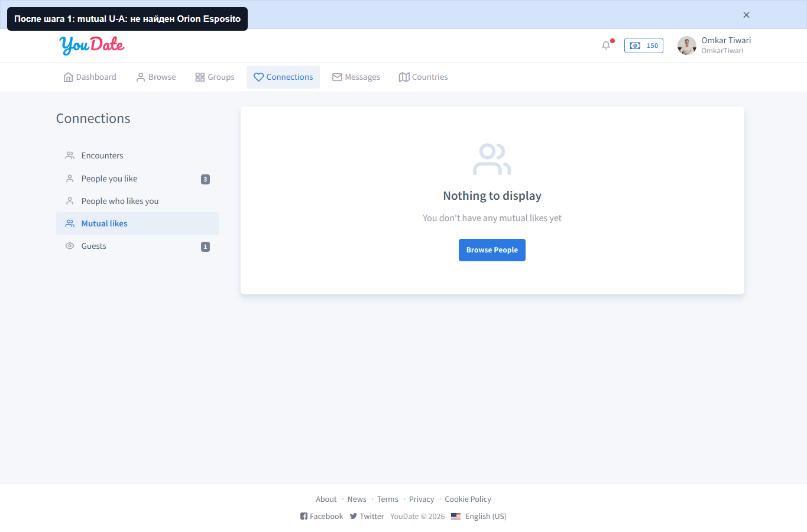
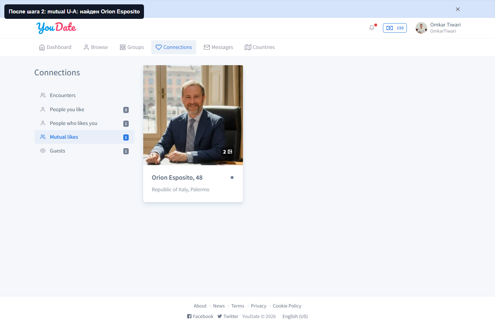
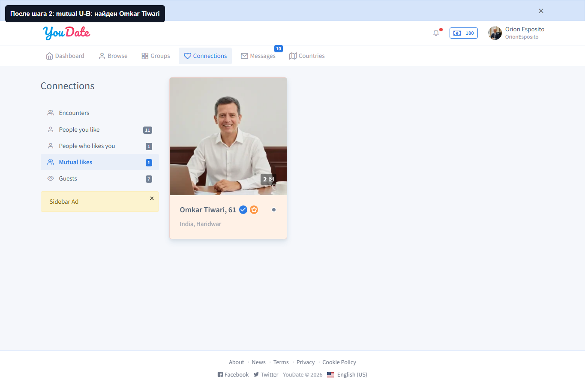

Confideline QA/BA · live connections · 2026-05-10
Connections: mutual likes
Проверен live-сценарий лайков между двумя пользователями: чистый baseline, односторонний лайк, проверка у получателя, встречный лайк, mutual у обоих, rollback тестового состояния.
ИтогPASS
ПараU182 ↔ U184
СтороныОбе проверены
RollbackВыполнен
Короткий вывод
| Статус | Проверка | Что получили | Вывод |
|---|
| PASS | Baseline | Перед тестом пара очищена: mutual и входящие списки пустые для этой пары. | Тест стартовал не на загрязненном состоянии. |
| PASS | U182 лайкает U184 | /en/connections/toggle-like?toUserId=184 вернул liked=true; U184 видит U182 во входящих. | Лайк доставляется получателю. |
| PASS | Mutual до встречного лайка | После первого лайка mutual у U182 и U184 еще пустой. | Система не делает match раньше встречного действия. |
| PASS | U184 лайкает U182 | /en/connections/toggle-like?toUserId=182 вернул liked=true; mutual виден у обоих. | Mutual likes работают с двух сторон. |
| PASS | Rollback | Оба тестовых лайка сняты, mutual после rollback не отображается. | Тестовое состояние убрано. |
Для Игоря
PASS
CONNECTIONS-MUTUAL-BOTH-SIDES
Факт: подтвержден полный цикл лайков: one-way like появляется у получателя, mutual появляется только после встречного лайка и виден обоим пользователям.
Где смотреть при регрессии: ConnectionsController::actionToggleLike(), LikeManager::toggleLike(), LikeManager::TYPE_MUTUAL, страницы /connections/likes/from-you, /to-you, /mutual.
Как воспроизвести: взять чистую пару U-A/U-B, убедиться что mutual пустой, сделать U-A -> U-B, проверить входящие у U-B, затем U-B -> U-A и проверить mutual у обоих.
NO DEFECT
Новых багов не найдено
Действие: чинить по этому блоку сейчас нечего. Если после будущих правок появится жалоба на matches/mutual, этот отчет можно использовать как эталонный regression-test.
Важно: action является toggle. Нельзя тестировать нажатием на загрязненной паре без baseline, потому что повторный вызов снимет уже существующий лайк.
Для Алексея
| Категория | Вывод | Что это значит |
|---|
| Управленческий PASS | Mutual likes/matches в базовом сценарии работают. | Эту часть можно считать закрытой на текущем live-состоянии; дальше важнее проверять premium-locks, bans/shadow-ban и UX. |
| Правило тестирования | Для toggle-действий всегда нужен clean baseline и rollback. | Иначе тестировщик может сам удалить существующий лайк и получить ложный баг. |
| Улучшение контура | В script добавлен retry для admin login-as, потому что один из коротких login-as вызовов временно не нашел ссылку. | Это не продуктовый дефект, но полезная защита тестового контура от случайных инфраструктурных сбоев. |
Evidence screenshots
PASS
Baseline: mutual пустой
Что тестировал: перед действиями U182 не должен видеть U184 в mutual. Что получил: выбранная пара очищена перед проверкой.

На этом экране доказываем отсутствие mutual до действий.
PASS
Односторонний лайк дошел U184
Что тестировал: после лайка U182 -> U184 получатель должен видеть U182 во входящих лайках. Что получил: U184 видит Omkar Tiwari.

Это сторона получателя, а не только ответ отправителя.
PASS
Mutual не появился раньше времени
Что тестировал: после одного лайка match еще не должен появляться. Что получил: mutual у U182 остается пустым.

Одного лайка недостаточно для mutual.
PASS
Mutual виден U182
Что тестировал: после встречного лайка U182 должен видеть U184 в mutual. Что получил: Orion Esposito отображается у U182.

Доказательство mutual со стороны U182.
PASS
Mutual виден U184
Что тестировал: U184 тоже должен видеть U182 в mutual. Что получил: Omkar Tiwari отображается у U184.

Доказательство mutual со стороны U184.
PASS
Rollback выполнен
Что тестировал: после снятия тестовых лайков mutual должен исчезнуть. Что получил: U182 больше не видит U184 в mutual.
Тестовое состояние очищено после доказательства.